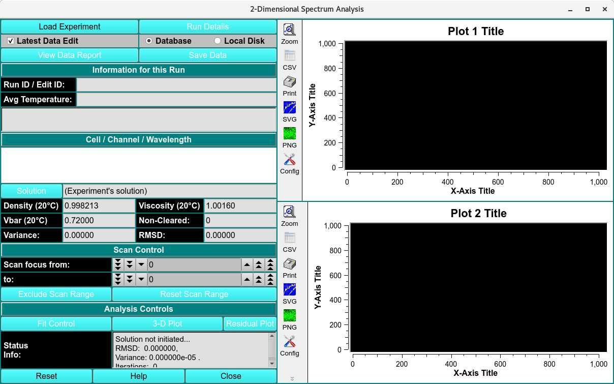
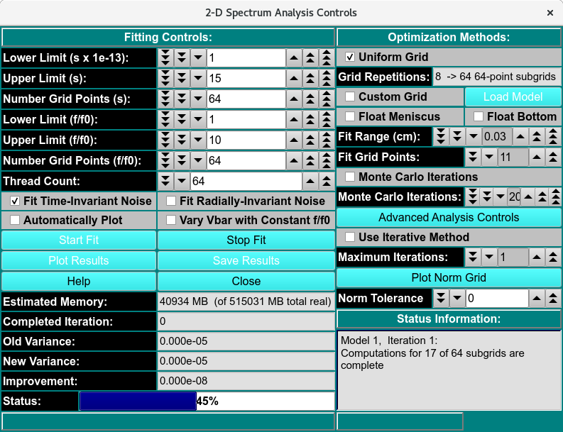
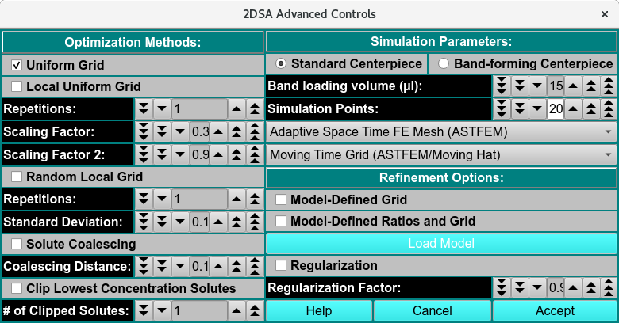

2-Dimensional Spectrum Analysis Functions¶
This module enables you to perform 2-dimensional spectrum analysis on a chosen experimental data set. Upon completion of an analysis fit, plots available include: experiment; simulation; overlayed experiment and simulation; residuals; time-invariant noise; radially-invariant noise; 3-d model. Final outputs may include one or more models and noises.
The 2DSA method is used for composition analysis of sedimentation velocity experiments. It can generate sedimentation coefficient, diffusion coefficient, frictional coefficient, f/f 0 ratio, and molecular weight distributions. The distributions can be plotted as 3-dimensional plots (2 parameters from the above list against each other), with the third dimension representing the concentration of the solute found in the composition analysis. The set of all such final calculated solutes form a model which are used to generate a simulation via Lamm equations. The simulation is plotted overlaying a plot of experimental data.
Every 2DSA pass can be repeated for a specified number of refinement iterations. These iterations, in turn, can be repeated for a specified number of meniscus points or Monte Carlo iterations.
Each refinement iteration proceeds over a defined grid of s and f/f 0 values. That grid is divided into subgrids as defined by a number of grid refinements in each direction.

2-Dimensional Spectrum Analysis
2DSA Main Window Functions¶
Load Experiment |
Click here and, in the resulting Load Run Data Dialog, select an edited data set to load. |
Run Details |
Pop up a dialog showing Run Details Dialog. |
Latest Data Edit |
Uncheck to allow choosing an edit other than the latest one for the raw experimental data. |
Database |
Select to specify data input from the database. |
Local Disk |
Select to specify data input from local disk. |
View Data Report |
Generate a report file and view it in a dialog. See the details of the report in 2DSA Process. |
Save Data |
Save models and noises, as well as report and plot images files. |
Run ID / Edit ID: |
The Run identifier string and the Edit identifier (generally a time string) are displayed for loaded edit. |
Avg Temperature: |
The average temperature over all the scans of the loaded data. |
(experiment description) |
A text string is displayed giving a fairly detailed description of the experiment. |
Cell / Channel / Wavelength |
One or more rows of data edit triples. If more than one, click on a row to select it as the data of interest. |
Solution |
Click this button to open a Solution Management dialog that allows changes to buffer and analyte characteristics of the data set. |
Density (20°C) |
Shows the density value for the loaded experiment. Click the Solution button to open a dialog in which density and other values may be changed. |
Viscosity (20°C) |
Shows the viscosity value for these loaded experiment. Click the Solution button to open a dialog in which viscosity and other values may be changed. |
Vbar (20°C) |
Shows the vbar value for the loaded experiment. Click the Solution button to open a dialog in which vbar and other values may be changed. |
Skipped |
The count of experiment data scans skipped. |
Variance: |
Variance value (square of RMSD) for residuals. |
RMSD: |
Root-Mean-Square-of-Differences for residuals. |
Scan focus from: |
Select a low scan of the range of values for exclusion from analysis. |
to: |
Select a high scan of the range of values for exclusion from analysis. |
Exclude Scan Range |
Initiate exclusion of the scans given in the above controls. |
Reset Scan Range |
Reset to the full range of scans. |
Fit Control |
Open a dialog to set analysis parameters and start a fit run. For details on the results of clicking this button, see 2DSA Analysis Control. |
3-D Plot |
After a 2DSA model is fitted, open a control window for a 3-Dimensional plot of the final computed model. |
Residual Plot |
After a 2DSA model is fitted, open a plot dialog for a far more detailed set of result plots. See 2DSA Residual Plot Dialog for further details. |
Status Info: |
This text window displays continually updated summaries of computational activity and results. |
(upper right side plot) |
Upon analysis completion, this plot is of the Residuals (Experimental minus Simulation minus any Noise). |
(lower right side plot) |
Upon analysis completion, this plot is of an overlay of the Experimental and Simulation data. |
Window Controls
Reset |
Indicate that window is reset and the plots are initiated. |
Help |
Display this detailed 2-Dimensional Spectrum Analysis Functions help. |
Close |
Close all windows and exit. |
2DSA Analysis Control Window¶
The parameters of this dialog define and control an analysis run to find the set of solutes that best fits experimental data.
Each refinement iteration proceeds over a defined grid of s and f/f0 values. That grid is divided into subgrids as defined by a number of grid refinements in each direction. The base fit analysis pass thus defined may be repeated a specified number of times, with the second and subsequent refinement iterations adding calculated solutes from the previous iteration to subgrid solutes in each subgrid analysis.
A full set of analysis iterations may be repeated for either a range of meniscus points or a number of monte carlo iterations.

2-Dimensional Spectrum Analysis Controls
2DSA Analysis Control Functions¶
Fitting Controls
Lower Limit (s x 1e-13): |
Set a lower limit of sedimentation coefficient values to scan. |
Upper Limit (s): |
Set an upper limit of sedimentation coefficient values to scan. |
Number Grid Points (s) |
Set the total grid count of sedimentation coefficient points. |
Lower Limit (f/f0): |
Set a lower limit of frictional ratio values to scan. |
Upper Limit (f/f0): |
Set an upper limit of frictional ratio values to scan. |
Number Grid Points (f/f0) |
Set the total grid count of frictional ratio points. |
Thread Count: |
Specify by counter the number of threads to use for computations. This value is the total number of worker threads used at one time. The master thread generally has little work to do during computations, so the value may be set to your machine’s total processors or cores, 8-16 threads work best for a typical single-wavelength datasets. |
Fit Time-Invariant Noise |
Check this box if you want to calculate time-invariant noise. |
Fit Radially-Invariant Noise |
Check this box if you want to calculate radially-invariant noise. |
Automatically Plot |
Check this box if you want plot dialogs to automatically open at the completion of all calculations. |
Vary Vbar with Constant f/f0 |
Check this box if you want to vary vbar while holding f/f0 constant. With this box checked, the control window replaces the lower and upper limits of f/f0 with controls for the upper and lower limits of vbar. |
Start Fit |
Click to begin the fit analysis. |
Stop Fit |
If something seems wrong with the progress of analysis or if you realize you have parameterized incorrectly, click this button to abort the fit run. |
Plot Results |
Open 3-D and Residual plot dialogs to display final results. |
Save Results: |
Save final model(s) and any noises generated. Also output report and plot image files. |
Estimated Memory: |
Text showing a memory use estimate based on chosen parameters. |
Completed Iteration: |
Display of the last completed refinement iteration number. |
Old Variance: |
The variance value for the previous iteration. |
New Variance: |
The variance value for the last completed iteration. |
Improvement: |
The difference between the variance value from the last iteration and the one preceeding it. |
Status: |
A progress bar showing activity progress within each iteration pass. |
Optimization Methods
Uniform Grid |
Check this box if Uniform Grid is your preferred optimization method. This is currently the only choice. |
Grid Refinements: |
The number of refinements (subgrid divisions) in each dimension (s and f/f0). The square of this number is the number of subgrids. The Number Grid Points given for each dimension, divided by Grid Refinements, is the approximate number of subgrid points in that dimension. |
Custom Grid |
Check this box to load a custom grid as the preffered optimization method. A Load Distribution dialog to load the costum grid generated by the Custrom Grid Editor (CG). |
Float Meniscus: |
Check this box if you wish to wrap the refinement iterations in outer iterations of meniscus scans. Note that this option means that Monte Carlo (below) may not be chosen. |
Float Bottom: |
Check this box to fit the Bottom position. |
Fit Range (cm): |
Select the total meniscus/bottom or both value ranges, centered around the original edited data’s value, for which to perform iterations. |
Grid Points: |
Select the total number of meniscus/bottom points (iterations) to sample. |
Monte Carlo Iterations: |
Check this box if you wish to wrap the refinement iterations in an outer set of monte carlo iterations. The second and subsequent iterations use as “experiment” data input the previous iteration’s simulated data with gaussian determined random variations. Note that as mentioned above, this choice and Meniscus are mutually exclusive. Monte Carlo iterations do not allow noise calculations. |
Monte Carlo Iterations: |
Select a number of Monte Carlo iterations to perform. A separate model is produced from each each iteration. |
Advanced Analysis Controls |
Click on this button to open the 2DSA Advanced Analysis Control dialog with control parameters not of interest to the typical user. |
Use Iterative Method: |
Check this box if you want to refine analysis fits with multiple refinement iterations. |
Maximum Iterations: |
Select the maximum number of refinement iterations. This number may not be reached if subsequent iterations achieve the same set of computed solutes or if their variances differ by a very small amount. |
Status Information: |
The text box here is continually updated with summaries of analysis activity and iteration results. |
2DSA Advanced Analysis Control¶
This dialog provides for definition of an analysis run with parameters not normally of interest to the typical user. The advanced analysis choices presented in this dialog fall into three categories.

2DSA Advanced Controls
Optimization Methods: Parameters in this section allow for methods beyond the default Uniform Grid method.
Standard Centerpiece |
Check to specify a standard, non-band-forming centerpiece |
Band-forming Centerpiece |
Check to specify a band-forming centerpiece. |
Band-loading volume (ml): |
Specify any band-loading volume in milliliters. |
Band-loading Volume: |
Specify a band-loading volume value. |
Simulation Points: |
Specify simulation points. |
(mesh type) |
Select from one of several mesh types, including Adaptive Space Time (ASTFEM), Claverie, Moving Hat, user File, or Adaptive Space Volume (ASVFEM). |
(grid type): |
Select the grid type to use in the simulation: MOVING, FIXED. |
Simulation Parameters: Parameters here allow for changes in the base Lamm equation simulation computation method.
Refinement Options: These parameters duplicate some found in the standard analysis control dialog; and add the Regularization options